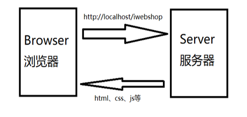

非功能测试
功能测试涉及了软件在功能上正反两面的测试，而非功能测试就是所有其他方面的测试，包括 效率性、可靠性、可移植性、可用性……
1 效率性
什么时候考虑？
用户量大、业务多的项目
关注点
访问项目时的时间，即浏览器发送一个请求到服务器，从服务器获取数据并解析显示完整的页面所耗费的时间。

2 可靠性
软件使用者期望软件能够无误运行。可靠性是度量软件如何在主流情形和非预期情形下维持它的功能，有时也包括软件出错时的自恢复能力。
什么时候考虑？
与人身、财产安全相关的---金融、保险、医疗系统
关注点
安全性：登录时密码是否进行加密以及密码是否容易破解
3 可移植性
可移植性指一种计算机上的软件转置到其它计算机上的能力。
什么时候考虑？
项目要求在不同的操作系统、不同浏览器、不同的平台下操作时
关注点
不同的操作系统
Windows、Linux、mac、Android、ios 相同的操作系统不同的版本 win7、win8、win10
不同的浏览器
三大主流: IE、Chrome、Firefox
相同的浏览器不同的版本: IE8、IE9、IE11
其他常用的浏览器，如：搜狗、360 注意不同的版本：高速模式（Chrome）、兼容模式(IE)
不同的网络
Wifi、有线、2G、3G、4G、5G
不同的设备
ipad/kindle
4 可用性和易用性
- 易用性测试
易用性测试是指用户使用软件时是否感觉方便，比如是否最多点击鼠标三次就可以达到用户的目的。
- 可用性测试
让一群具有代表性的用户对产品进行典型操作，同时观察员和开发人员在一旁观察、聆听、做记录。
关注点
项目难易程度
适用人群
用户的计算机水平
注意
易用性和可用性存在一定的区别，可用性是指是否可以使用，而易用性是指是否方便使用
５ 易维护性
易维护性指维护人员对该软件进行维护的难易程度,具体包括理解、改正、改动和改进该软件的难易程度。